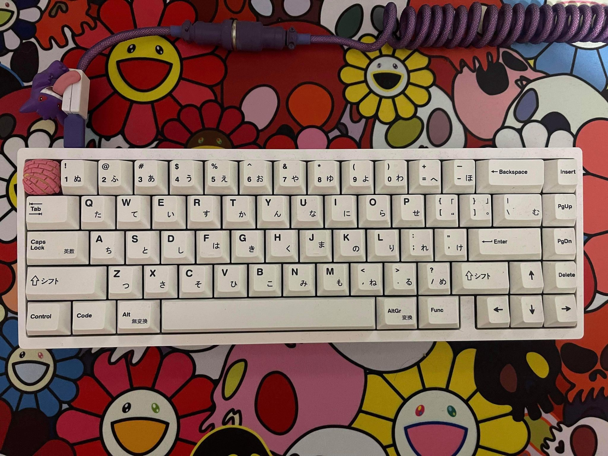
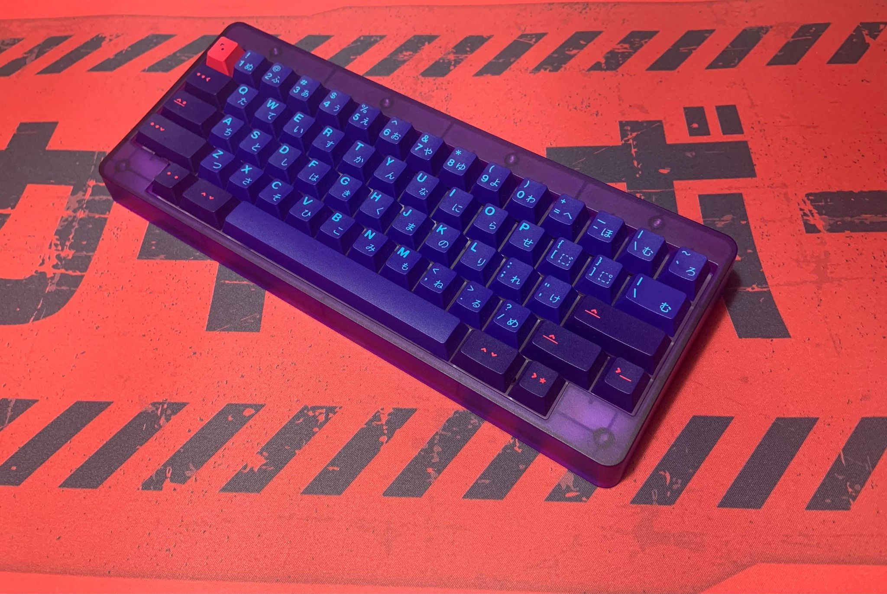
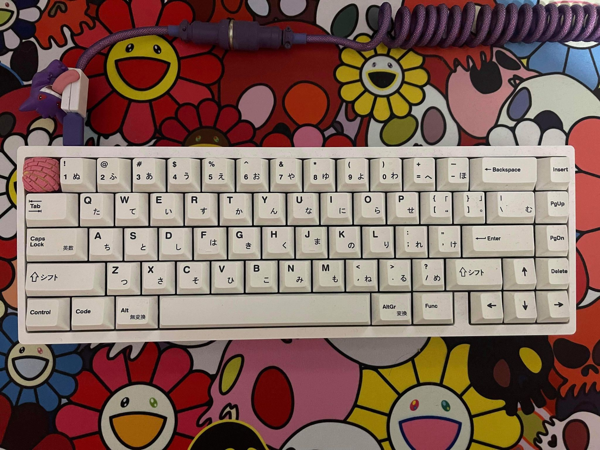
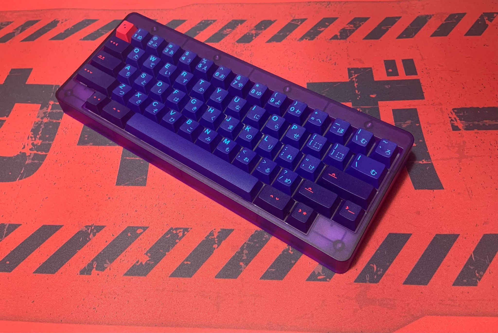

Past Builds
Kb67Lite
A build I did for a friend. Build is a Kbd67 lite with lubed cream switches and japanese BoW keycaps!
Kara
One of my personal builds. Rama kara, built with lubed Holy Panda switches and GMK laser keycaps!

A build I did for a friend. Build is a Kbd67 lite with lubed cream switches and japanese BoW keycaps!
One of my personal builds. Rama kara, built with lubed Holy Panda switches and GMK laser keycaps!
